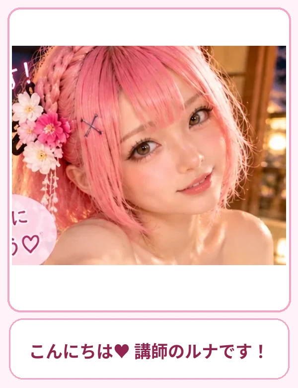

一緒にやってみましょう♡
STEP 01
アプリ連携の基本
ルナ先生からの解説 🌸 対応するアプリを接続すると、許可した範囲のデータを検索・参照できる場合があります。
🖱️ 操作の手順
- ChatGPTの設定やアプリ一覧を開きます。
- 利用したいサービスを探します。
- 求められるアクセス権を読みます。
- 必要な範囲だけ許可します。
📋 そのまま使える質問文
ChatGPTで使えるアプリ連携の種類と、接続前の注意点を初心者向けに教えてください。

ここがポイントです♡
STEP 02
Google Driveを使う
ルナ先生からの解説 🌸 対応する接続環境なら、Drive内の資料を探して要約するなどの使い方があります。
🖱️ 操作の手順
- Google Driveの接続可否を確認します。
- 対象ファイルを具体的に指定します。
- 資料の要約や比較を頼みます。
- 共有範囲と権限を確認します。
📋 そのまま使える質問文
Google Driveの「会議資料」という名前のファイルを探して、要点をまとめてください。

ゆっくり進めてね♡
STEP 03
Gmailを活用する
ルナ先生からの解説 🌸 メールの検索や下書きなど、利用可能な操作は接続状態と権限に依存します。
🖱️ 操作の手順
- Gmailの接続状態を確認します。
- 探したいメールの条件を指定します。
- 返信案を作って内容を確認します。
- 送信前に宛先・添付・本文を必ず確認します。
📋 そのまま使える質問文
今週届いた取引先からのメールを要約し、返信が必要なものを整理してください。
便利な使い方です♡
STEP 04
カレンダーを活用する
ルナ先生からの解説 🌸 予定確認や空き時間の確認などを効率化できます。予定の作成・変更は内容を確かめて行いましょう。
🖱️ 操作の手順
- カレンダーの接続状態を確認します。
- 日付と予定名を指定して検索します。
- 空き時間を確認します。
- 予定を作る場合は日時と場所を再確認します。
📋 そのまま使える質問文
来週の予定を曜日ごとに整理し、空いている時間帯を教えてください。